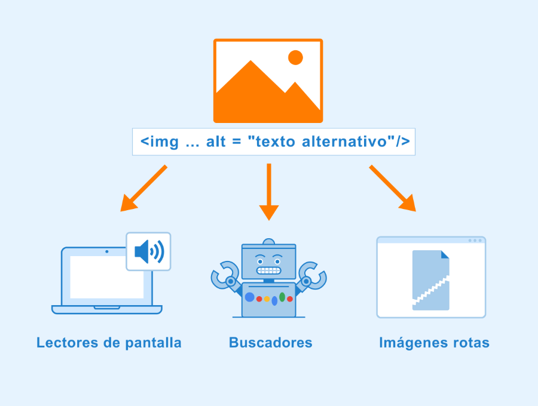

ATRIBUTOS Y VALORES
segun la Web Carontestudio en 20222, Existen diferentes tipos de atributos para las etiquetas. Algunos son de ámbito global, mientras que otros son más específicos y solo son válidos para algunas etiquetas HTML. En general podemos ordenarlos de la siguiente manera: Atributos requeridos: son atributos necesarios para la etiqueta HTML. Sin ellos, la etiqueta por si sola no tendrá el comportamiento esperado. Atributos opcionales: en este caso, estos atributos son utilizados para modificar la funcionalidad por defecto de la etiqueta HTML. Atributos globales: son atributos de ámbito general que pueden ser utilizados en casi cualquier etiqueta HTML. tomado de : https://carontestudio.com/blog/atributos-html/